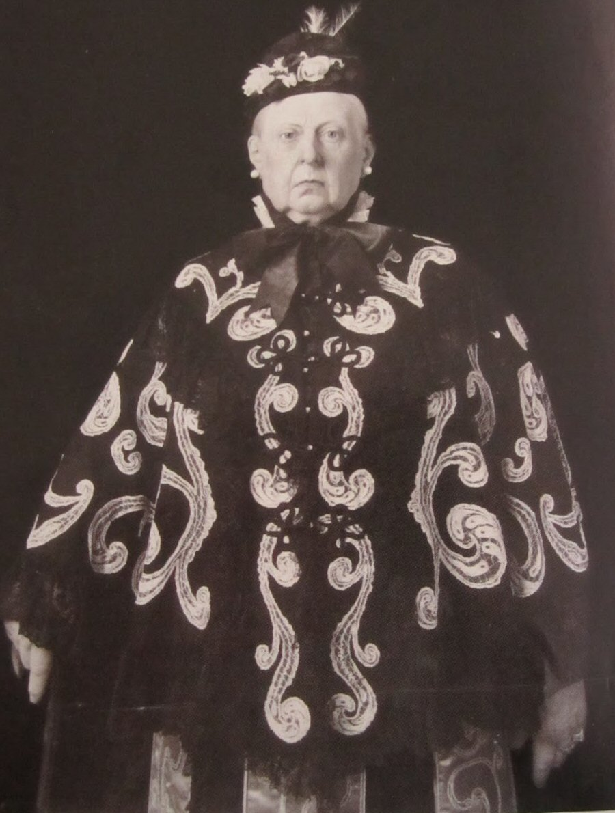

Wednesday, January the 5th, 2011
back to: title, date or indexes
We must thank ZMKC for cutting out of a 2001 issue of the New Yorker this absolutely splendid photograph of Queen Victoria. I suspect that the Queen was channelling Madame Blavatsky, presenting herself as a mystic seer. Such garb should set an example to the royal personages of today.
